Day-1 locations, round 2
The basement office, redrawn from scratch with more floor space, and the new dorm room where day 1 ends. RDBT Anima at the game's shape, no people. Each image has the intent and the camera position it was staged for, so you can judge it against that. Click an image to enlarge; arrow keys step through, Esc closes.
Round 2: fixes after your picks
Office pick 5202: window beside the door removed
You picked office-reverse-5202. The window next to the exit would look into a basement corridor, so that patch of wall was redone and nothing else changed (checked pixel by pixel: only the area around the old window differs). Method: wall cloned from just above it, then a light masked repaint (RDBT, denoise 0.55) with the prompt shown. The three prompts asked for water stains, a notice board and a poster; all three came out as one or two sheets of paper by the intercom plus a few stains, so they differ only a little.
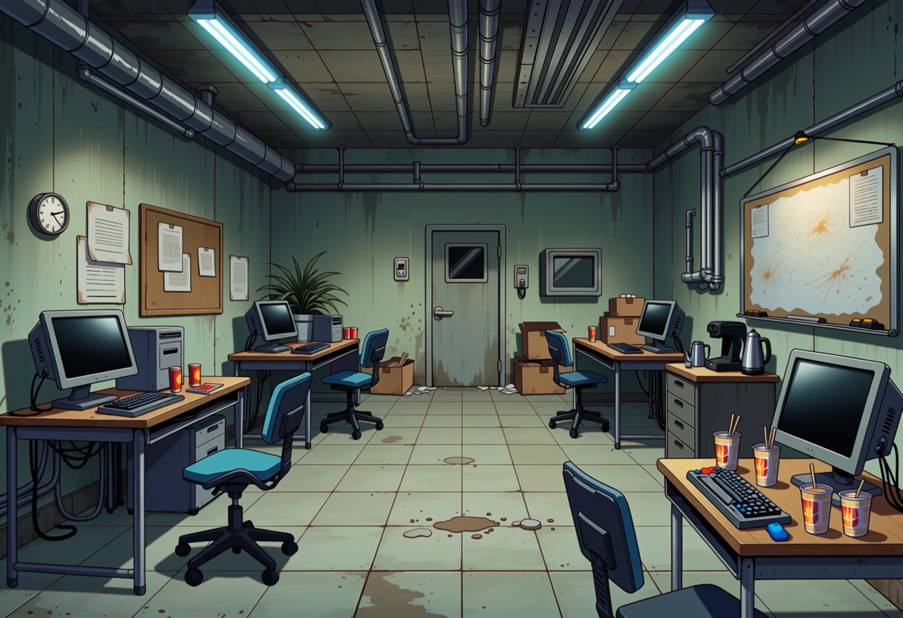
Your pick, before (grey)
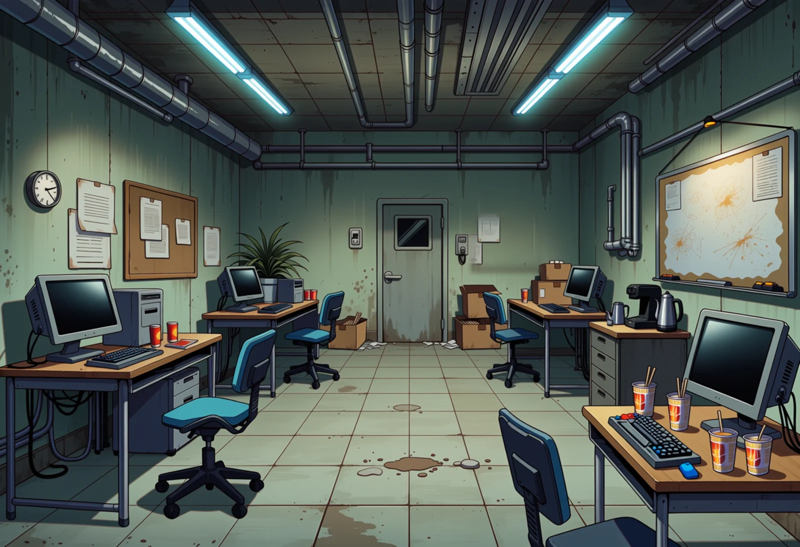
fix a
Prompt
anime screenshot, anime coloring, 2d, cel shading, clean lineart, detailed anime background art, hand-painted anime background, no humans, scenery. A stained concrete wall painted faded green-grey. Water stains run down the bare wall. Cool flat fluorescent light. No window and no screen on the wall.
fix b
Prompt
anime screenshot, anime coloring, 2d, cel shading, clean lineart, detailed anime background art, hand-painted anime background, no humans, scenery. A stained concrete wall painted faded green-grey. A small cork notice board with a few curling faded papers hangs on the wall. Cool flat fluorescent light. No window and no screen on the wall.
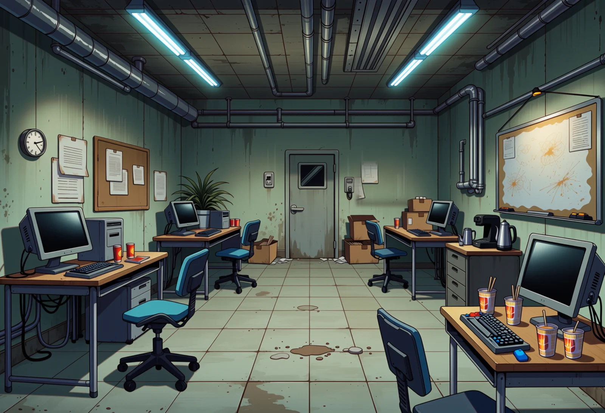
fix c
Prompt
anime screenshot, anime coloring, 2d, cel shading, clean lineart, detailed anime background art, hand-painted anime background, no humans, scenery. A stained concrete wall painted faded green-grey. An old faded poster with one corner peeling hangs on the wall. Cool flat fluorescent light. No window and no screen on the wall.
Dorm: the worst room on the island
The interiors of window-6201 and 6202 kept; the window now looks at the concrete wall of the next block about 2 m away, with a drainpipe and one small lamp, seen straight on from the 2nd floor, with at most a sliver of night sky. The orange patch on the left wall (it read as sunset) is painted out. Method: the view is rendered on its own (prompt below) and fitted into the glass behind the original frame; the left-wall patch is toned back to the wall colour in code (two masked repaints redrew it); a faint trace is left. Inside, the ceiling light and desk lamp are still on.
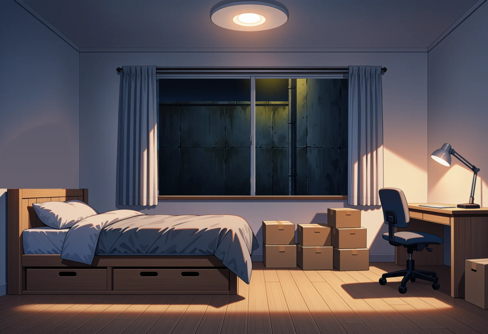
dorm-worst-a: room 6201, view 53
Intent: He has been given the worst room on the island: the company city is all towers, and his window looks at a wall.
Prompt
anime screenshot, anime coloring, 2d, cel shading, clean lineart, detailed anime background art, hand-painted anime background, no humans, scenery. A grimy concrete wall at night, seen straight on from close up. The wall fills the whole picture. A drainpipe runs down the wall. Dim yellow light from a small lamp on the wall. Dark grey-blue, sparse dim yellow light. No sky, no buildings in the distance and no street.
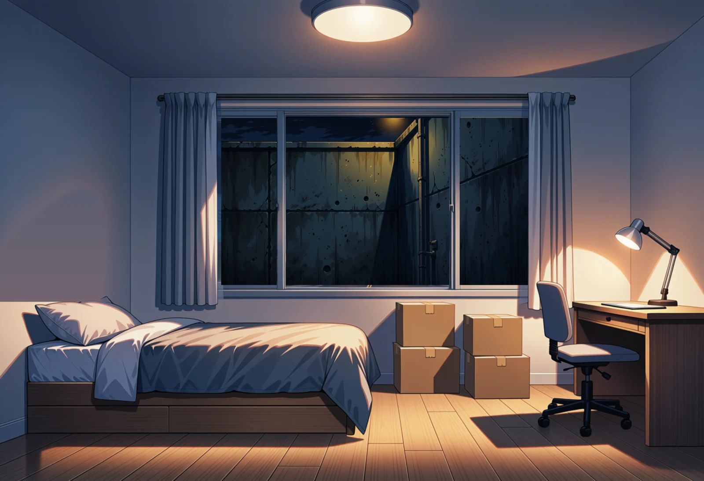
dorm-worst-b: room 6202, view 42
Intent: He has been given the worst room on the island: the company city is all towers, and his window looks at a wall.
Prompt
anime screenshot, anime coloring, 2d, cel shading, clean lineart, detailed anime background art, hand-painted anime background, no humans, scenery. A grimy concrete wall at night, seen straight on from close up. The wall fills the whole picture. A drainpipe runs down the wall. Dim yellow light from a small lamp on the wall. Dark grey-blue, sparse dim yellow light. No sky, no buildings in the distance and no street.
dorm-worst-c: room 6202, view 54
Intent: He has been given the worst room on the island: the company city is all towers, and his window looks at a wall.
Prompt
anime screenshot, anime coloring, 2d, cel shading, clean lineart, detailed anime background art, hand-painted anime background, no humans, scenery. A grimy concrete wall at night, seen straight on from close up. The wall fills the whole picture. A drainpipe runs down the wall. Dim yellow light from a small lamp on the wall. Dark grey-blue, sparse dim yellow light. No sky, no buildings in the distance and no street.
Round 1 (for reference)
Basement office: Planning Office 7, B2
Redone from scratch, not from option 2. Asked for: a big forgotten room on basement level 2 with a four-desk block in the middle, Emi's desk facing it, Mio's gaming corner, ramen cups, filing cabinets, fluorescent tubes and no windows. RDBT gives every room plenty of floor but mostly puts the desks along the walls; only island-5402 has desks in the middle. It would not do a high corner view (four tries, all at eye level). The first image is the wide shot from the doorway.
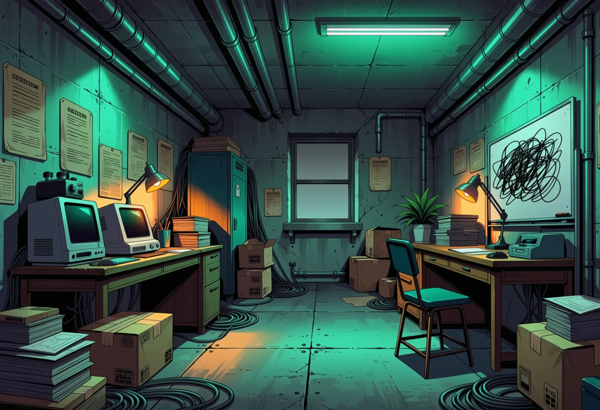
Current game image (for comparison)
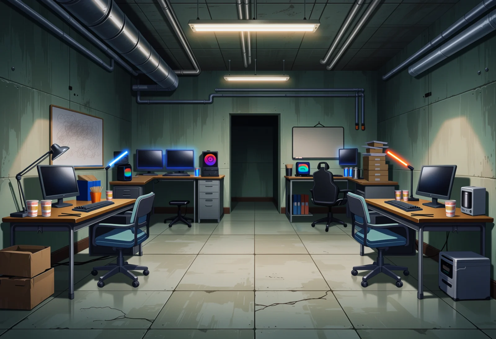
office-door-5101
Intent: His first look at Planning Office 7: a big, forgotten basement room with space for a team, used every day and nobody's priority.
Wide room with a lot of open floor. Desks stand along the side walls (not in a block in the middle, which the prompt asked for). Mio's gaming desk is back right (gaming chair, RGB PC). The dark doorway in the back wall would have to lead to a back room or storage. Ramen cups on the desks, no windows.
Prompt
masterpiece, best quality, score_9, score_8, score_7, year 2025, newest, highres, absurdres, very aesthetic, anime screenshot, anime coloring, 2d, cel shading, clean lineart, safe, no humans, scenery, background art for a visual novel, (wide establishing shot:1.3), camera at standing eye level just inside the entrance door in one corner of the room, looking diagonally across the whole room toward the far corner, a large forgotten basement office room about ten metres wide and eight metres deep on the second basement level of a corporate tower, low ceiling of bare concrete with exposed grey pipes, ducts and cable trays, long fluorescent tube lights in plain fixtures, one tube dimmer than the rest, scuffed pale grey vinyl floor tiles, painted concrete block walls in faded institutional green-grey, (open empty floor space in the foreground and walkways between the desks:1.4), in the middle of the room four old mismatched steel office desks pushed together in two facing pairs, each desk with an office chair tucked in and an old monitor and keyboard, a fifth desk alone at the far wall facing the group, the team leader's desk, with a desk lamp and neat stacks of folders, (in the far corner a gaming setup: a desk with three monitors, a tower PC with coloured fan lights, a black gaming chair, a headset hanging on a monitor, empty energy drink cans, a stack of empty ramen cups:1.3), an old grey steel filing cabinet row along one wall with cardboard file boxes stacked on top, a dusty whiteboard with faded scribbles and no readable text, a small coffee machine and an electric kettle on a low cabinet, a dying potted plant, several (empty instant ramen cups with disposable chopsticks:1.3) left on the desks, a little shabby and neglected but used every day, cool flat fluorescent light, no daylight, dominant grey-green concrete, broad pale grey floor, sparse warm desk-lamp orange and small blue-magenta PC glow accents
Negative
worst quality, low quality, early, old, score_1, score_2, score_3, artist name, blurry, jpeg artifacts, bad anatomy, bad hands, missing fingers, extra fingers, long fingernails, claws, extra limbs, merged limbs, text, watermark, signature, 3d, realistic, photorealistic, render, chubby, nude, nsfw, child, loli, people, person, 1girl, 1boy, crowd, character, people, silhouette, readable text, letters, logo, brand name, signage text, duplicate objects, floating objects, impossible architecture, distorted perspective, warped lines, window, large window, window view, sky, sunlight, sunbeam, daylight, trees, garden, carpet, cozy home office, living room, bed, sofa, cubicles, open-plan office floor, glass walls, modern office, skyscraper view, crowded, cramped, narrow room
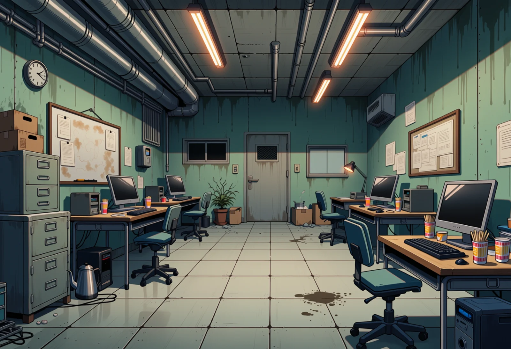
office-reverse-5201
Intent: The same room seen from Mio's corner: the one door everyone comes through, and how far the desks are from it.
Looking back at the only door (small wired-glass window, clock beside it). Desks line both walls with a wide walkway down the middle; ramen cups, kettle, filing cabinets, a noticeboard. The small dark panel to the left of the door is a vent or hatch, not a window.
Prompt
masterpiece, best quality, score_9, score_8, score_7, year 2025, newest, highres, absurdres, very aesthetic, anime screenshot, anime coloring, 2d, cel shading, clean lineart, safe, no humans, scenery, background art for a visual novel, (wide shot:1.3), camera at standing eye level in the far corner of the room, looking back across the room toward the only door, a large forgotten basement office room about ten metres wide and eight metres deep on the second basement level of a corporate tower, low ceiling of bare concrete with exposed grey pipes, ducts and cable trays, long fluorescent tube lights in plain fixtures, one tube dimmer than the rest, scuffed pale grey vinyl floor tiles, painted concrete block walls in faded institutional green-grey, (one plain grey steel door with a small wired-glass window in the far wall:1.3), a light switch and a wall clock beside it, (plenty of open floor space and walkways:1.3), in the middle of the room four old mismatched steel office desks pushed together in two facing pairs, office chairs at the desks, old monitors and keyboards, one chair pulled out and turned, in the foreground on the right the edge of a gaming desk with a monitor and an empty energy drink can, an old grey steel filing cabinet row along one wall with cardboard file boxes stacked on top, a dusty whiteboard with faded scribbles and no readable text, a small coffee machine and an electric kettle on a low cabinet, a dying potted plant, several (empty instant ramen cups with disposable chopsticks:1.3) left on the desks, a little shabby and neglected but used every day, cool flat fluorescent light, no daylight, dominant grey-green concrete, broad pale grey floor, sparse warm desk-lamp orange and small blue-magenta PC glow accents
Negative
worst quality, low quality, early, old, score_1, score_2, score_3, artist name, blurry, jpeg artifacts, bad anatomy, bad hands, missing fingers, extra fingers, long fingernails, claws, extra limbs, merged limbs, text, watermark, signature, 3d, realistic, photorealistic, render, chubby, nude, nsfw, child, loli, people, person, 1girl, 1boy, crowd, character, people, silhouette, readable text, letters, logo, brand name, signage text, duplicate objects, floating objects, impossible architecture, distorted perspective, warped lines, large window, window view, sky, sunlight, sunbeam, daylight, trees, garden, carpet, cozy home office, living room, bed, sofa, cubicles, open-plan office floor, glass walls, modern office, skyscraper view, crowded, cramped, narrow room
office-reverse-5202
Intent: The same room seen from Mio's corner: the one door everyone comes through, and how far the desks are from it.
Same angle as 5201, with cooler tube light and a coffee machine by the door. Plenty of floor. The gaming corner is behind the camera here, as staged.
Prompt
masterpiece, best quality, score_9, score_8, score_7, year 2025, newest, highres, absurdres, very aesthetic, anime screenshot, anime coloring, 2d, cel shading, clean lineart, safe, no humans, scenery, background art for a visual novel, (wide shot:1.3), camera at standing eye level in the far corner of the room, looking back across the room toward the only door, a large forgotten basement office room about ten metres wide and eight metres deep on the second basement level of a corporate tower, low ceiling of bare concrete with exposed grey pipes, ducts and cable trays, long fluorescent tube lights in plain fixtures, one tube dimmer than the rest, scuffed pale grey vinyl floor tiles, painted concrete block walls in faded institutional green-grey, (one plain grey steel door with a small wired-glass window in the far wall:1.3), a light switch and a wall clock beside it, (plenty of open floor space and walkways:1.3), in the middle of the room four old mismatched steel office desks pushed together in two facing pairs, office chairs at the desks, old monitors and keyboards, one chair pulled out and turned, in the foreground on the right the edge of a gaming desk with a monitor and an empty energy drink can, an old grey steel filing cabinet row along one wall with cardboard file boxes stacked on top, a dusty whiteboard with faded scribbles and no readable text, a small coffee machine and an electric kettle on a low cabinet, a dying potted plant, several (empty instant ramen cups with disposable chopsticks:1.3) left on the desks, a little shabby and neglected but used every day, cool flat fluorescent light, no daylight, dominant grey-green concrete, broad pale grey floor, sparse warm desk-lamp orange and small blue-magenta PC glow accents
Negative
worst quality, low quality, early, old, score_1, score_2, score_3, artist name, blurry, jpeg artifacts, bad anatomy, bad hands, missing fingers, extra fingers, long fingernails, claws, extra limbs, merged limbs, text, watermark, signature, 3d, realistic, photorealistic, render, chubby, nude, nsfw, child, loli, people, person, 1girl, 1boy, crowd, character, people, silhouette, readable text, letters, logo, brand name, signage text, duplicate objects, floating objects, impossible architecture, distorted perspective, warped lines, large window, window view, sky, sunlight, sunbeam, daylight, trees, garden, carpet, cozy home office, living room, bed, sofa, cubicles, open-plan office floor, glass walls, modern office, skyscraper view, crowded, cramped, narrow room
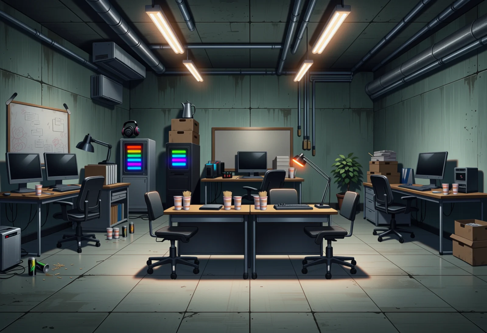
office-island-5402
Intent: As office-door, with the four desks as one block in the middle so there is floor on every side.
The only render with desks in the middle: two desks with chairs facing the camera, space all around, Emi's desk at the far wall and Mio's RGB PC towers behind. Different model take on the room from the others.
Prompt
masterpiece, best quality, score_9, score_8, score_7, year 2025, newest, highres, absurdres, very aesthetic, anime screenshot, anime coloring, 2d, cel shading, clean lineart, safe, no humans, scenery, background art for a visual novel, (wide establishing shot:1.3), camera at standing eye level just inside the entrance, looking straight across the room to the far wall, a large forgotten basement office room about ten metres wide and eight metres deep on the second basement level of a corporate tower, low ceiling of bare concrete with exposed grey pipes, ducts and cable trays, long fluorescent tube lights in plain fixtures, one tube dimmer than the rest, scuffed pale grey vinyl floor tiles, painted concrete block walls in faded institutional green-grey, (in the middle of the floor one block of four old steel desks pushed together, two facing two, with open floor all around it:1.4), each desk with an office chair and an old monitor and keyboard, a fifth desk alone at the far wall facing the group, the team leader's desk, with a desk lamp and neat stacks of folders, (in the far corner a gaming setup: a desk with three monitors, a tower PC with coloured fan lights, a black gaming chair, a headset hanging on a monitor, empty energy drink cans, a stack of empty ramen cups:1.3), an old grey steel filing cabinet row along one wall with cardboard file boxes stacked on top, a dusty whiteboard with faded scribbles and no readable text, a small coffee machine and an electric kettle on a low cabinet, a dying potted plant, several (empty instant ramen cups with disposable chopsticks:1.3) left on the desks, a little shabby and neglected but used every day, cool flat fluorescent light, no daylight, dominant grey-green concrete, broad pale grey floor, sparse warm desk-lamp orange and small blue-magenta PC glow accents
Negative
worst quality, low quality, early, old, score_1, score_2, score_3, artist name, blurry, jpeg artifacts, bad anatomy, bad hands, missing fingers, extra fingers, long fingernails, claws, extra limbs, merged limbs, text, watermark, signature, 3d, realistic, photorealistic, render, chubby, nude, nsfw, child, loli, people, person, 1girl, 1boy, crowd, character, people, silhouette, readable text, letters, logo, brand name, signage text, duplicate objects, floating objects, impossible architecture, distorted perspective, warped lines, window, large window, window view, sky, sunlight, sunbeam, daylight, trees, garden, carpet, cozy home office, living room, bed, sofa, cubicles, open-plan office floor, glass walls, modern office, skyscraper view, crowded, cramped, narrow room
Rejected before this page (7)
- office-door-5102: a gaming chair stands on top of a stack of old monitors
- office-door-5103: dark open doorway in the back wall with a PC standing inside it; staged as a room with its one door behind the camera
- office-high-5301: camera at eye level, not high in a corner as staged
- office-high-5302: camera at eye level, desks in one row along the back wall
- office-island-5401: the middle "desks" are two bare tables stacked one behind the other, no chairs or monitors
- office-cctv-5501: still eye level, and the model drew a CCTV camera on the wall instead of using it as the viewpoint
- office-cctv-5502: same as 5501
Dorm room (end of day 1)
His new company dorm room, seen for the first time at night after day 1. Small studio, bed with one pillow at the head end, desk, kitchenette, three unopened moving boxes that were sent ahead, and the company towers lit up outside the window. The current game image (grey) has pillows at both ends of the bed.
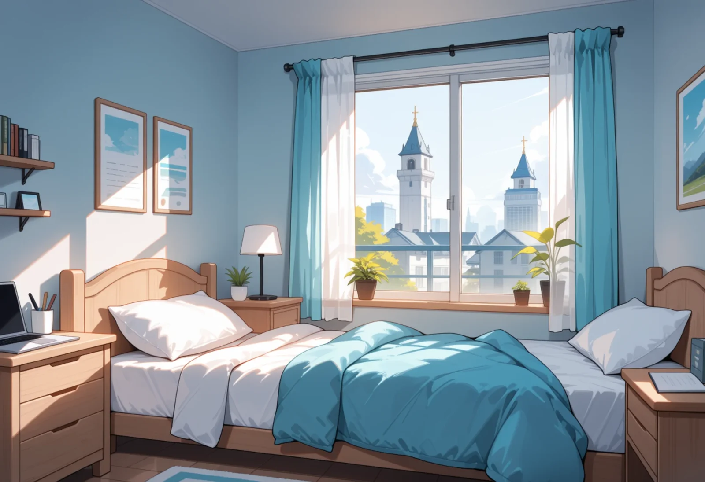
Current game image (for comparison)
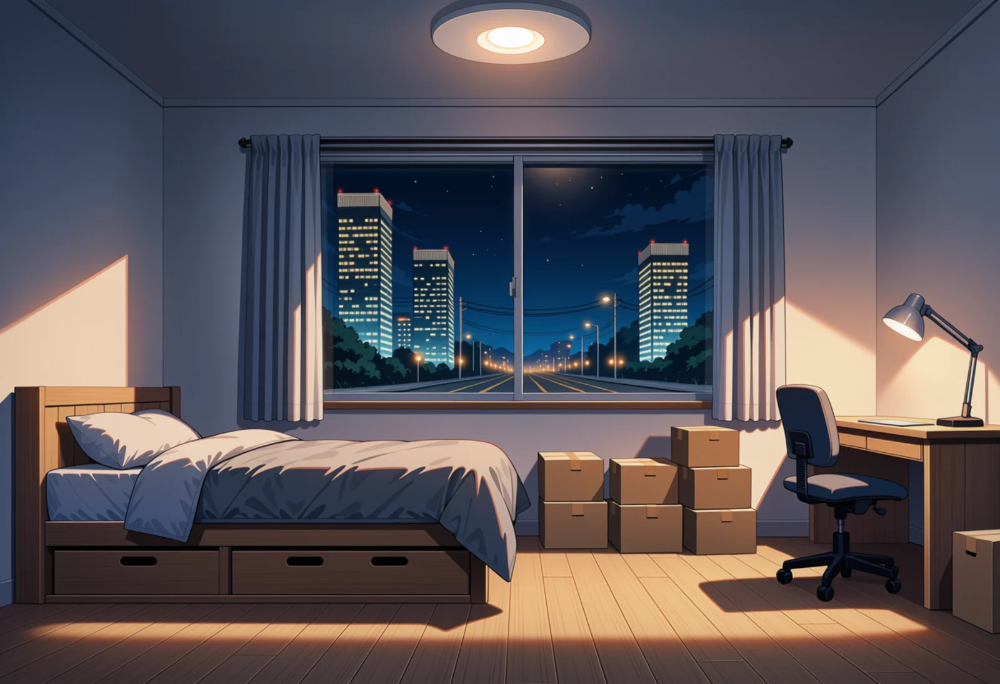
dorm-window-6201
Intent: The same first look, framed on the window and the city he now lives in.
One bed, one pillow, at the left end against the wall. Seven boxes rather than three. The view reads as about a third floor (street lights and power lines just under the sill), lower than the sixth floor in the note; that fits a low dorm block, say if it should be higher.
Prompt
masterpiece, best quality, score_9, score_8, score_7, year 2025, newest, highres, absurdres, very aesthetic, anime screenshot, anime coloring, 2d, cel shading, clean lineart, safe, no humans, scenery, background art for a visual novel, camera at standing eye level by the inner wall, looking across the small room at the window wall, a small new Japanese company dormitory studio apartment for one person, about three metres wide and six metres long, plain white walls, light wood-look flooring, a round white LED ceiling light, (one wide window in the far wall with thin curtains pushed to the sides:1.2), (through the window at night: lit office towers a few hundred metres away, their lit floors level with the window and the towers rising past the top of the window, a street with street lights further down, a dark blue night sky:1.3), a single bed along the window wall under the window, its head against the left wall, (one single bed with a plain grey-blue duvet and exactly one pillow at the head end:1.4), a plain desk and chair on the right with a desk lamp, (three unopened brown cardboard moving boxes sealed with plain tape:1.3) stacked on the floor at the foot of the bed, no writing on the boxes, bare and new, nothing unpacked yet, night, warm white ceiling light inside, dominant soft white walls and pale wood, broad deep night blue in the window, sparse warm city-light yellow accents
Negative
worst quality, low quality, early, old, score_1, score_2, score_3, artist name, blurry, jpeg artifacts, bad anatomy, bad hands, missing fingers, extra fingers, long fingernails, claws, extra limbs, merged limbs, text, watermark, signature, 3d, realistic, photorealistic, render, chubby, nude, nsfw, child, loli, people, person, 1girl, 1boy, crowd, character, people, silhouette, readable text, letters, logo, brand name, signage text, duplicate objects, floating objects, impossible architecture, distorted perspective, warped lines, two pillows, pillows at both ends of the bed, second pillow at the foot, double bed, bunk bed, two beds, futon, messy room, clothes on the floor, daytime, sunlight, blue sky, posters, decorations, plants, television, sofa, large apartment, luxury hotel room, balcony furniture
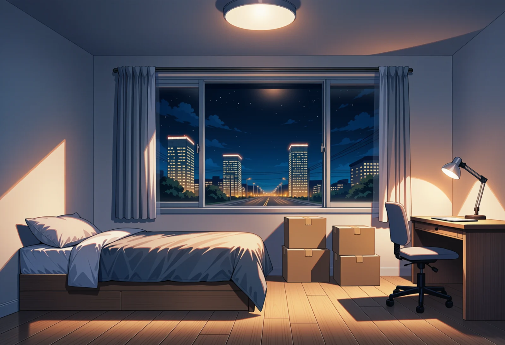
dorm-window-6202
Intent: The same first look, framed on the window and the city he now lives in.
As 6201: one pillow at the head end, four boxes, desk right, towers across the road. Same floor height as 6201.
Prompt
masterpiece, best quality, score_9, score_8, score_7, year 2025, newest, highres, absurdres, very aesthetic, anime screenshot, anime coloring, 2d, cel shading, clean lineart, safe, no humans, scenery, background art for a visual novel, camera at standing eye level by the inner wall, looking across the small room at the window wall, a small new Japanese company dormitory studio apartment for one person, about three metres wide and six metres long, plain white walls, light wood-look flooring, a round white LED ceiling light, (one wide window in the far wall with thin curtains pushed to the sides:1.2), (through the window at night: lit office towers a few hundred metres away, their lit floors level with the window and the towers rising past the top of the window, a street with street lights further down, a dark blue night sky:1.3), a single bed along the window wall under the window, its head against the left wall, (one single bed with a plain grey-blue duvet and exactly one pillow at the head end:1.4), a plain desk and chair on the right with a desk lamp, (three unopened brown cardboard moving boxes sealed with plain tape:1.3) stacked on the floor at the foot of the bed, no writing on the boxes, bare and new, nothing unpacked yet, night, warm white ceiling light inside, dominant soft white walls and pale wood, broad deep night blue in the window, sparse warm city-light yellow accents
Negative
worst quality, low quality, early, old, score_1, score_2, score_3, artist name, blurry, jpeg artifacts, bad anatomy, bad hands, missing fingers, extra fingers, long fingernails, claws, extra limbs, merged limbs, text, watermark, signature, 3d, realistic, photorealistic, render, chubby, nude, nsfw, child, loli, people, person, 1girl, 1boy, crowd, character, people, silhouette, readable text, letters, logo, brand name, signage text, duplicate objects, floating objects, impossible architecture, distorted perspective, warped lines, two pillows, pillows at both ends of the bed, second pillow at the foot, double bed, bunk bed, two beds, futon, messy room, clothes on the floor, daytime, sunlight, blue sky, posters, decorations, plants, television, sofa, large apartment, luxury hotel room, balcony furniture
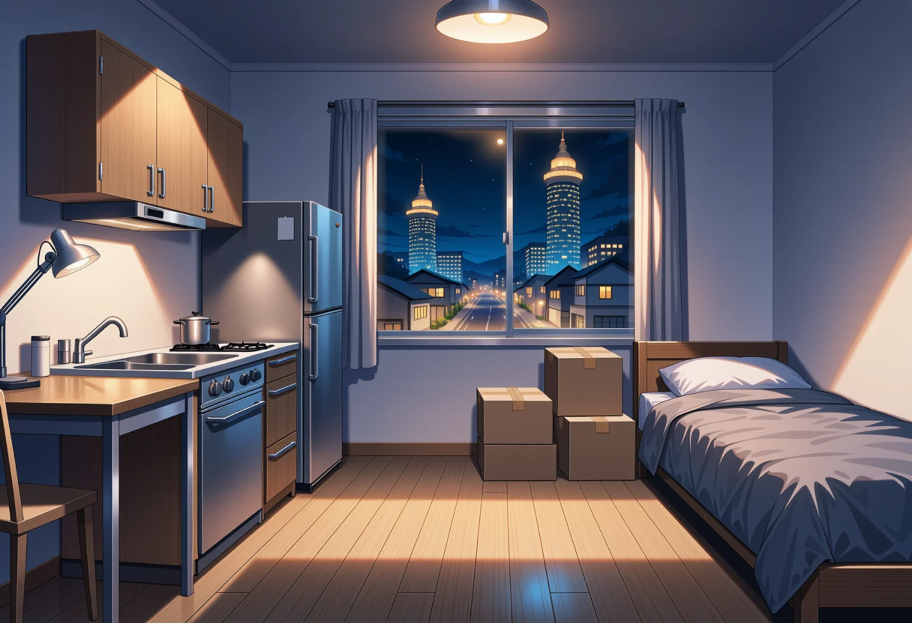
dorm-entry-6101
Intent: End of day 1: he opens the door of his new dorm room for the first time. It is small and bare; his boxes got here first.
From the door: kitchenette left, bed right with one pillow at the window end, boxes in the middle. The kitchen is too big for a Japanese company dorm room (full oven and a big fridge), and the desk is pushed against the counter. The view looks low, over houses and a road.
Prompt
masterpiece, best quality, score_9, score_8, score_7, year 2025, newest, highres, absurdres, very aesthetic, anime screenshot, anime coloring, 2d, cel shading, clean lineart, safe, no humans, scenery, background art for a visual novel, camera at standing eye level just inside the front door, looking down the length of the narrow room toward the window on the far wall, a small new Japanese company dormitory studio apartment for one person, about three metres wide and six metres long, plain white walls, light wood-look flooring, a round white LED ceiling light, on the left in the foreground a compact kitchenette along the wall: a short steel counter with a sink and one electric hob, a small fridge under the counter, further along on the left a plain desk with a chair and a desk lamp, on the right a single bed along the right-hand wall, (one single bed with a plain grey-blue duvet and exactly one pillow at the head end:1.4), the head of the bed at the window end, the foot of the bed toward the camera, (three unopened brown cardboard moving boxes sealed with plain tape:1.3) stacked on the floor in the middle of the room, no writing on the boxes, (one large window filling the far wall with the curtains open:1.2), (through the window at night: lit office towers a few hundred metres away, their lit floors level with the window and the towers rising past the top of the window, a street with street lights further down, a dark blue night sky:1.3), night, warm white ceiling light inside, dominant soft white walls and pale wood, broad deep night blue in the window, sparse warm city-light yellow accents
Negative
worst quality, low quality, early, old, score_1, score_2, score_3, artist name, blurry, jpeg artifacts, bad anatomy, bad hands, missing fingers, extra fingers, long fingernails, claws, extra limbs, merged limbs, text, watermark, signature, 3d, realistic, photorealistic, render, chubby, nude, nsfw, child, loli, people, person, 1girl, 1boy, crowd, character, people, silhouette, readable text, letters, logo, brand name, signage text, duplicate objects, floating objects, impossible architecture, distorted perspective, warped lines, two pillows, pillows at both ends of the bed, second pillow at the foot, double bed, bunk bed, two beds, futon, messy room, clothes on the floor, daytime, sunlight, blue sky, posters, decorations, plants, television, sofa, large apartment, luxury hotel room, balcony furniture
Rejected before this page (3)
- dorm-entry-6102: range hood hangs over the desk lamp instead of the hob; a window-shaped patch of light on the right wall with no window to cast it
- dorm-dark-6301: bright blue window-shaped patches on both side walls near the camera, which no window in the room could cast; two masked repaints did not remove them (the first added a second bed head)
- dorm-dark-6302: window-shaped patch of light on the right wall with no window to cast it